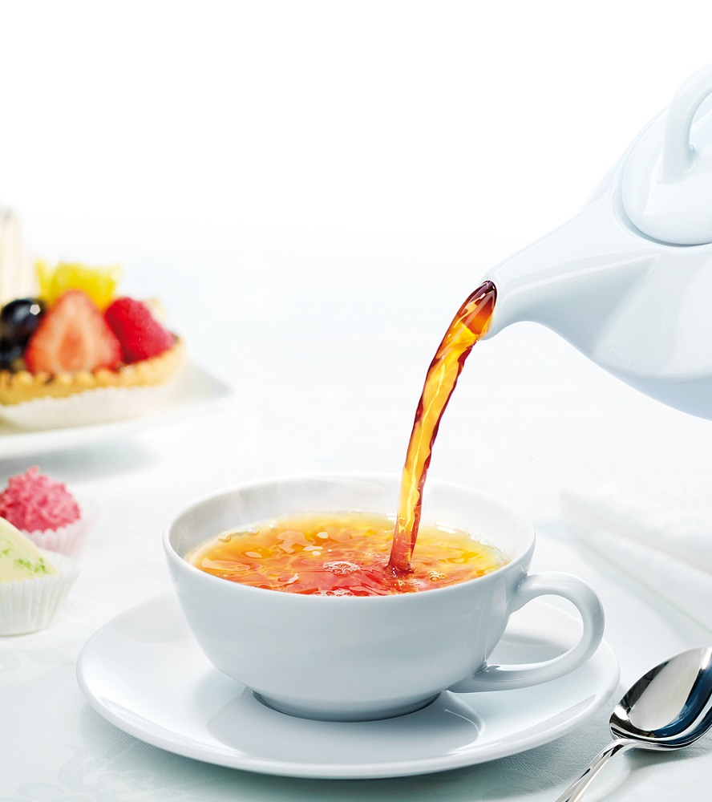

01 / SHIZUOKA未確認を含む保存回答写真と地図で、一日の過ごし方を見る ↗
静岡県浜松市
11/21 浜松・音とカフェの5時間
大人2人／10:00～15:00／主案6800円。時刻・徒歩は提案。ピンは施設代表点で入口や通行経路ではない。未取得の地点は未配置とし架空の道路を描かない。
9移動・休憩を含む手順
6,800円大人2人の主案掲載額
4候補比較 · 写真3枚 · 引用30件
335秒の実生成 · 4画面幅の表示を検査
残っている確認事項（1条件）
- 主カフェの営業時間・所在地・利用方式と食事飲物甘味の公式掲載価格、税サービス料
土日11～17時、食事L.O.14時。食事各2000円はサラダ・コーヒー付き、プリン600円、税サービス料込み。2階・住所確認済。個別の予約可否・利用方式の詳細は取得不能で未確認。当日店内利用を申告し判断。